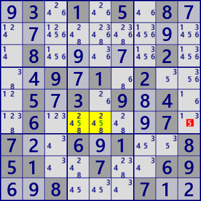
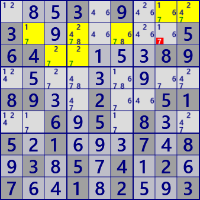

●LockedCandidate
LockedCandidateには、2つのタイプがあります。
LockedCandidateには、2つのタイプがあります。
着目ブロックで数字Nの入るのが1行（または1列）のみのとき、行方向（列方向）のブロックの同じ行（列）では数字Nが候補から除外されます。
 ブロックb5では、数字5が入るのはr6のみです。
従って、ブロックb6のr6c9では数字5は候補から除外されます。
.3.1.5.8...........8.....2...9.1.2...5.3.9.4..6.....7.7..6.1..851..7..69..8...7..
着目ブロックと行方向（列方向）で関連するブロックに着目します。 数字Nの入るのが2行（または2）のとき、 着目ブロックでは行方向（列方向）の同じ2行（2列）では数字Nが候補から除外される。
数字7に着目すると、ブロックb1とb2では2・3行目にあります。
従って、ブロックb3では1行目に限定され、r2c8では数字7は候補から除外されます。
...3.9...3.......564.....89.........89..2..51..6.5.8..5.1...7.8.3.5.4.2.7..1.2..3
主要な手順を解説します。
LockedCandidateは、人が見つけるのは比較的容易ですが、プログラム化するとfor等の繰返しが多く、バグが混入しやすくなります。 ここで示したプログラムコードは、LinqやIEnumerableインターフェース等を活用すると、解析の方法・条件により近いレベルでプログラムが構築できる例となっています。
public bool gSDK_LockedCandidate( ){
int[] BNoBs = new int[9];
for( int bx=0; bx<9; bx++ ){}
BNoBs[bx] = pBDL.IEGet(18+bx,0X1FF).Aggregate(0,(Q,P)=>Q|P.FreeB );
}
//==== Type-1 =====
for( int b0=0; b0<9; b0++ ){
int BNoB;
if( (BNoB=BNoBs[b0])==0 ) continue;
foreach( var no in BNoB.IEGet_BtoNo() ){
int noB=1<<no;
int rcBr=pBDL.IEGet(18+b0,noB).Aggregate(0,(Q,P)=>Q|(1<<P.r) );
if( rcBr.BitCount()==1 ){ //行方向
int r0=rcBr.BitToNum();
foreach( var P in pBDL.IEGet(0+r0,noB) ){
if( P.b!=b0 ){ SolCode=2; break; } }
}
if( SolCode>0 ){
foreach( var P in pBDL.IEGet(0+r0,noB) ){
if( P.b!=b0 ) P.CancelB=noB;
else P.SetNoBBgColor(noB,AttCr,SolBkCr);
}
goto SolFond;
}
}
int rcBc=pBDL.IEGet(18+b0,noB).Aggregate(0,(Q,P)=>Q|(1<<P.c) );
if( rcBc.BitCount()==1 ){ //列方向
int c0=rcBc.BitToNum();
foreach( var P in pBDL.IEGet(9+c0,noB) ){
if( P.b!=b0 ){ SolCode=2; break; }
}
if( SolCode>0 ){
foreach( var P in pBDL.IEGet(9+c0,noB) ){
if( P.b!=b0 ) P.CancelB=noB;
else P.SetNoBBgColor(noB,AttCr,SolBkCr);
}
goto SolFond;
}
}
}
}
//==== Type-2 =====
for( int b0=0; b0<9; b0++ ){ // 行方向 b0:着目ブロック
int b1=b0/3*3+(b0+1)%3, b2=b0/3*3+(b0+2)%3; // b1,b2:行方向の関連ブロック
int BNoB = BNoBs[b0] & BNoBs[b1] & BNoBs[b2];
if( BNoB==0 ) continue; //関連ブロックに数字なし
foreach( var no in BNoB.IEGet_BtoNo() ){ //関連ブロックにある数字に着目
int noB=1<<no;
//着目ブロック0に着目数字のある行
int rcBr0 = pBDL.IEGet(18+b0,noB).Aggregate(0,(Q,P)=> Q|(1<<P.r) );
if( rcBr0.BitCount()<=1 ) continue;
//関連ブロック1に着目数字のある行
int rcBr1 = pBDL.IEGet(18+b1,noB).Aggregate(0,(Q,P)=> Q|(1<<P.r) );
//関連ブロック2に着目数字のある行
int rcBr2 = pBDL.IEGet(18+b2,noB).Aggregate(0,(Q,P)=> Q|(1<<P.r) );
int rcBr12 = rcBr1|rcBr2;
int r0 = rcBr0.DifSet(rcBr12).BitToNum();
if( rcBr1>0 && rcBr2>0 && rcBr12.BitCount()==2 && r0>=0 ){ //発見
SolCode=2;
foreach( var P in pBDL.IEGet(18+b0,noB) ){ //着目ブロックの情報設定
if( P.r!=r0 ) P.CancelB=noB;
else P.SetNoBBgColor(noB,AttCr,SolBkCr);
}
//他ブロック情報設定
foreach( var P in pBDL.IEGet(18+b1,noB) ){
P.SetNoBBgColor(noB,AttCr,SolBkCr);
}
foreach( var P in pBDL.IEGet(18+b2,noB) ){
P.SetNoBBgColor(noB,AttCr,SolBkCr);
}
goto SolFond;
}
}
}
for( int b0=0; b0<9; b0++ ){ // 列方向 b0:着目ブロック
int b1=(b0+3)%9, b2=(b0+6)%9; // b1,b2:列方向の関連ブロック
int BNoB = BNoBs[b0] & BNoBs[b1] & BNoBs[b2];
if( BNoB==0 ) continue; //関連ブロックに数字なし
foreach( var no in BNoB.IEGet_BtoNo() ){ //関連ブロックにある数字に着目
int noB=1<<no;
//着目ブロック0に着目数字のある列
int rcBc0 = pBDL.IEGet(18+b0,noB).Aggregate(0,(Q,P)=> Q|(1<<P.c) );
if( rcBc0.BitCount()<=1 ) continue;
//関連ブロック1に着目数字のある列
int rcBc1 = pBDL.IEGet(18+b1,noB).Aggregate(0,(Q,P)=> Q|(1<<P.c) );
//関連ブロック2に着目数字のある列
int rcBc2 = pBDL.IEGet(18+b2,noB).Aggregate(0,(Q,P)=> Q|(1<<P.c) );
int rcBc12 = rcBc1|rcBc2;
int c0=(rcBc0.DifSet(rcBc12)).BitToNum();
if( rcBc1>0 && rcBc2>0 && rcBc12.BitCount()==2 && c0>=0 ){ //発見
SolCode=2;
foreach( var P in pBDL.IEGet(18+b0,noB) ){//着目ブロックの情報設定
if( P.c!=c0 ) P.CancelB=noB;
else P.SetNoBBgColor(noB,AttCr,SolBkCr);
}
//他ブロック情報設定
foreach( var P in pBDL.IEGet(18+b1,noB) ){
P.SetNoBBgColor(noB,AttCr,SolBkCr);
}
foreach( var P in pBDL.IEGet(18+b2,noB) ){
P.SetNoBBgColor(noB,AttCr,SolBkCr);
}
goto SolFond;
}
}
}
SolFond:
if( SolCode<=0 ) return false;
if( SolInfoDsp ) ResultLong = "Locked Candidate";
Result = "Locked Candidate";
return true;
}
}
C#に慣れた方は、こちらの方が分かり易いかもしれません。解析アルゴリズムを理解したら、必要な機能をイメージしてください。
その機能をコードにしたのが以下のプログラムです。解析部分は、タイプ1,2のそれぞれで10数ステップです。
public class LockedCandidateGen: AnalyzerBaseV2{
public LockedCandidateGen( GNPX_AnalyzerMan AnMan ): base(AnMan){ }
public override void Initialize(){}
public bool LockedCandidate( ){
for( int no=0; no<9; no++ ){
int noB=(1<<no);
int[] BRCs = new int[9];
foreach( var P in pBDL.Where(Q=>(Q.FreeB&noB)>0) )
BRCs[P.b] |= (1<<P.r)|(1<<(P.c+9));
//==== Type-1 =====
for( int b0=0; b0<9; b0++ ){
for( int hs=0; hs<10; hs+=9 ){ //0:行 9:列
int RCH=BRCs[b0]&(0x1FF<<hs);
if( RCH.BitCount()==1 ){
int hs0=RCH.BitToNum(18);
if( pBDL.IEGetCellsInHouse(hs0,noB).Any(Q=>Q.b!=b0) ){
SolCode=2;
foreach( var P in pBDL.IEGetCellsInHouse(hs0,noB) ){
if(P.b!=b0) P.CancelB=noB;
else P.SetNoBBgColor(noB,AttCr3,SolBkCr);
}
string SolMsg= "Locked Candidate B"+(b0+1)+" #"+(no+1);
Result=SolMsg;
if(SolInfoDsp) ResultLong=SolMsg;
if(!AnMan.SnapSaveGP()) return true;
}
}
}
}
//==== Type-2 =====
for( int b0=0; b0<9; b0++ ){
int b1, b2, rcB0, rcB1, rcB2;
for( int hs=0; hs<10; hs+=9 ){ //0:行 9:列
int hsX=0x1FF<<hs;
//関連ブロック
if(hs==0){ b1=b0/3*3+(b0+1)%3; b2=b0/3*3+(b0+2)%3; }// b1,b2:行方向
else{ b1=(b0+3)%9; b2=(b0+6)%9; } // b1,b2:列方向
if( (rcB0=BRCs[b0]&hsX).BitCount() <=1 ) continue;
if( (rcB1=BRCs[b1]&hsX) <=0 ) continue;
if( (rcB2=BRCs[b2]&hsX) <=0 ) continue;
int rcB12 = rcB1|rcB2;
int hs0=(rcB0.DifSet(rcB12)).BitToNum(18);
if( rcB12.BitCount()==2 && hs0>=0 ){ //発見
SolCode=2;
foreach( var P in pBDL.IEGetCellsInHouse(18+b0,noB) ){ //着目ブロック
if( !HouseCells[hs0].IsHit(P.rc) ) P.CancelB=noB;
else P.SetNoBBgColor(noB,AttCr3,SolBkCr);
}
foreach( var P in pBDL.IEGetCellsInHouse(18+b1,noB) )
P.SetNoBBgColor(noB,AttCr3,SolBkCr);//他ブロック情報設定
foreach( var P in pBDL.IEGetCellsInHouse(18+b2,noB) )
P.SetNoBBgColor(noB,AttCr3,SolBkCr);
string SolMsg= "Locked Candidate B"+(b0+1)+" #"+(no+1);
Result=SolMsg;
if(SolInfoDsp) ResultLong=SolMsg;
if(!AnMan.SnapSaveGP()) return true;
}
}
}
}
return false;
}
}